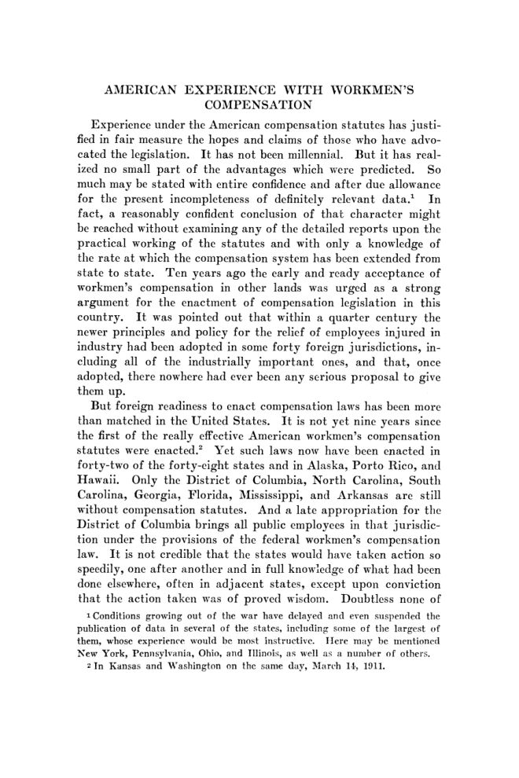

Fisher e o balanço da indenização por acidentes
Leitura: 8 min
Willard C. Fisher faz o balanço de menos de nove anos de leis americanas de indenização por acidente de trabalho: como se espalharam, quanto pagaram, o que fizeram pela segurança e onde falharam.


Em 1909, Samuel Gompers, presidente da American Federation of Labor, declarou preferir uma lei de responsabilidade do empregador aperfeiçoada. Dois anos depois, o presidente da federação do trabalho de Connecticut foi a uma audiência legislativa combater um projeto de indenização por acidentes; os trabalhadores organizados do estado preferiam simplesmente abolir a regra do co-empregado. Em Illinois, as primeiras propostas tiveram nos sindicatos alguns de seus críticos mais duros. Poucos anos de experiência depois, escreve Willard C. Fisher, da New York University, os trabalhadores, organizados ou não, eram em geral entusiastas do sistema.
O artigo de Fisher, na American Economic Review de março de 1920, faz o balanço das leis americanas de indenização por acidente de trabalho. A conclusão aparece logo: a experiência justificou em boa medida as esperanças dos defensores e realizou parte não pequena das vantagens previstas.
“Não trouxe o milênio.” (“It has not been millennial.”)
Com que rapidez a lei se espalhou?
As primeiras leis realmente eficazes foram aprovadas no mesmo dia de 1911, no Kansas e em Washington. Menos de nove anos depois, 42 dos 48 estados, além do Alasca, de Porto Rico e do Havaí, tinham leis desse tipo; só o Distrito de Columbia, as duas Carolinas, a Geórgia, a Flórida, o Mississippi e o Arkansas continuavam sem elas. Para Fisher, os estados não teriam agido tão depressa, um após o outro e conhecendo a experiência dos vizinhos, sem a convicção de que a medida era acertada. Nenhuma voz pediu a revogação. As emendas foram todas no sentido de ampliar: mais trabalhadores cobertos, percentuais e tetos maiores, carências menores, pagamentos mais longos, mais assistência médica e, em alguns estados, a inclusão de doenças.
Os empregadores também aderiram. Nos estados de lei opcional, poucos recusaram o sistema, e na Califórnia, em 1918, havia mais de 20 mil adesões voluntárias comunicadas à comissão de acidentes. A constitucionalidade, contestada no início em Montana, em Nova York e no Kentucky, ficou assentada por emendas constitucionais e por dezenas de decisões favoráveis, entre elas pelo menos cinco da Suprema Corte dos Estados Unidos.
As vítimas recebem mais?
Os totais são grandes. Em Wisconsin, de 1911 a 30 de junho de 1918, os pagamentos somaram US$ 6,917 milhões, dos quais US$ 1,773 milhão em assistência médica; em Massachusetts, US$ 20,253 milhões nos seis primeiros anos; em Nova York, US$ 36,631 milhões em três anos e meio. Fisher calcula que, se todo o país adotasse o padrão de Massachusetts de 1918, pagaria de US$ 125 milhões a US$ 150 milhões por ano, e talvez US$ 200 milhões pela experiência da Pensilvânia e de Nova York. Por caso, porém, os valores são modestos: em Wisconsin, cerca de US$ 100 por acidente indenizado; por morte, uma média geral que ele estima em cerca de US$ 3.000, ou menos.
A comparação certa, insiste, não é com as grandes indenizações obtidas em processos judiciais, que chegavam depois de litígios longos e caros, mas com o que as famílias realmente recebiam antes. As comissões estaduais de inquérito mostraram que muitos empregadores não pagavam nada aos dependentes dos mortos, ou pagavam US$ 50 ou US$ 100. Fisher arrisca que, sob as leis de responsabilidade civil, houve pagamento em no máximo um terço dos casos fatais.
Um temor dos críticos, a simulação de incapacidade para receber o benefício, não se confirmou. Fisher não encontra nos relatórios oficiais nenhuma indicação de que fosse um problema apreciável, e cita D. M. Holman, da comissão de acidentes de Massachusetts, que em quatro anos e meio não se lembrava de meia dúzia de casos claros.
A lei reduziu os acidentes?
Fisher é cauteloso. O movimento pela segurança industrial começou antes das leis, e as estatísticas gerais misturam influências opostas: a notificação mais completa exigida pela lei e a expansão da indústria na guerra, com máquinas mais velozes e operários novos, elevam os registros. Em Massachusetts, os acidentes notificados passaram de 90.631 em 1912–13 para 174.372 em 1916–17, mas cresceram menos de 6% até 1914–15 e mais de 80% nos dois anos seguintes.
A prova está nas comparações diretas. Em usinas siderúrgicas, a frequência de acidentes por mil trabalhadores de 300 dias foi de 167,1 onde havia sistemas de segurança completos, 272,4 onde estavam em desenvolvimento e 507,9 onde não havia nenhum. A lei contribuiu ao encarecer os acidentes para o empregador e, sobretudo, pelo seguro: seguradoras privadas e fundos estaduais passaram a ajustar prêmios ao histórico de acidentes ou às condições de segurança de cada cliente, e a fazer inspeções. Na Califórnia, uma campanha da comissão reduziu as mortes na mineração de 20 em 1916 para 10 em 1917.
Quanto custa à indústria?
Pouco, segundo Fisher. Os prêmios vão de uma fração de 1% da folha nas tecelagens a vários por cento na construção metálica e na mineração, e podem ser generalizados em cerca de 1%. Em West Virginia, a média foi de 1,41% em 1916–17; em Wisconsin, de 1,33% entre 1913 e 1916. Como o trabalho responde por cerca de um quinto do custo na manufatura, o acréscimo seria de um quinto de 1% do custo total, e nem isso é líquido, porque o empregador já pagava seguro de responsabilidade e litígios. O temor de que a lei afugentasse indústrias revelou-se infundado.
Onde a lei falha?
Fisher lista os defeitos. Deixar o direito do acidentado à mercê dos tribunais anulou a lei em muitos casos. Quase todos os estados limitam a assistência médica. A carência sem benefício ainda era de duas semanas em alguns estados e de dez dias em muitos, quando cerca de três quartos das incapacidades terminam em duas semanas: no Oregon, uma carência de uma semana teria excluído 35,38% dos acidentados, e uma de duas semanas, 62%. Vários estados não exigiam seguro, e a restrição a lesões acidentais deixava de fora as doenças profissionais.
Os percentuais nominais, de menos de metade a dois terços do salário, exageram o que se paga, por causa dos tetos semanais, como US$ 12, e dos prazos máximos. Em Minnesota, com taxa nominal de 60%, as indenizações por incapacidade temporária cobriram 38% da perda salarial em 1916–17 e 48% em 1917–18.
“É o valor efetivamente pago que conta.” (“It is the amount actually paid that counts.”)
O maior defeito é a cobertura estreita. Carl Hookstadt estimou em ao menos 7,4 milhões os empregados não cobertos nos estados com lei: cerca de 1,25 milhão no comércio interestadual e mais de seis milhões deixados de fora pelos legislativos, quase um terço do total. Na Califórnia, em 1917, houve 14.313 indenizações por incapacidade temporária para 107.420 incapacidades notificadas. A conclusão de Fisher é que as leis provaram seu valor, mas não chegaram à forma final, e serão estendidas e tornadas mais generosas.
Na minha leitura
Na minha leitura, o artigo é um exemplo de avaliação de política pública com dados imperfeitos. Fisher não toma o aumento dos acidentes notificados como prova de fracasso nem a queda em algumas indústrias como prova de sucesso: separa o efeito da lei do efeito da notificação, da expansão industrial e de um movimento de segurança anterior, e busca a evidência em comparações entre estabelecimentos com e sem programas de segurança.
O ponto econômico central é o mecanismo de incentivo. A lei não impõe a segurança diretamente; transfere o custo do acidente para o empregador, e o seguro com prêmio ajustado ao risco transmite esse custo de forma contínua. Ao mesmo tempo, Fisher mostra que o desenho do benefício, com carências, tetos e exclusões, decide quanto da promessa chega ao trabalhador.
Glossário
- Indenização por acidente de trabalho (workmen's compensation)
- pagamento ao acidentado ou a seus dependentes sem necessidade de provar culpa do empregador.
- Lei de responsabilidade do empregador
- regime em que o acidentado precisava processar o empregador e provar sua negligência.
- Regra do co-empregado (fellow-servant)
- doutrina do direito comum que isentava o empregador por acidente causado por outro empregado.
- Lei opcional
- lei de indenização a que o empregador pode aderir ou não, perdendo certas defesas se recusar.
- Período de carência
- dias iniciais de incapacidade durante os quais não se paga benefício.
- Classificação por experiência
- ajuste do prêmio de seguro ao histórico de acidentes do segurado.
- Classificação por tabela
- ajuste do prêmio à conformidade do estabelecimento com padrões de segurança.
Fontes
- American Experience with Workmen's Compensation — Willard C. Fisher (New York University) (pp. 18–47). JSTOR · Internet Archive (PDF)
- Edição completa, com os demais artigos: Nº 162 do Arquivo.
Documento em domínio público (EUA, publicado antes de 1931), via JSTOR Early Journal Content e Internet Archive. Resumo e comentário do autor deste site, sem afiliação com a American Economic Association. Encontrou um erro? Escreva: a correção é publicada no próprio texto, com data.
← Gardner e o limite da redistribuição ↑ Nº 162 · Gardner, os acidentes de trabalho e o imposto de renda dos estados